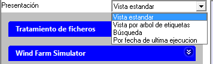

El Organizador de Escritorio dispone de 4 modos de presentar y acceder a las Opciones contenidas en un fichero de configuración. Son elegibles mediante el desplegable titulado "Presentación" que se muestra en la siguiente figura.

- Vista estandar.
- Vista por arbol de etiquetas.
- Vista para búsquedas por texto y etiquetas.
- Vista por fecha de última ejecución.